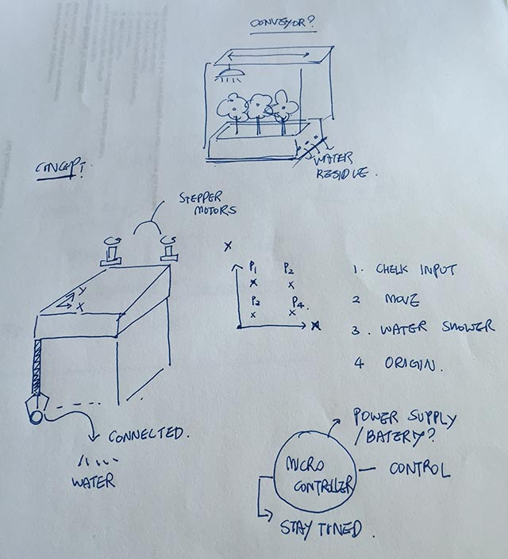
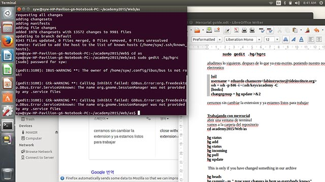

1.Principles and practices, project management
Plan and sketch a potential semester project, build a personal site in the class archive describing you and your final project.
 |
PROJECT CONCEPT SKETCH |
My final project is basically understanding the move X-Y movement. I looked at the past archive and history of past work from FabLab Seoul. I’m trying to mix the mechanism of 3D printer and electronic analog input and digital output. By the time i finish the academy I’ll be able to move by controller. Hopefully, I get to activate the analogue machine corresponding to the digital input.
What i had in my mind first, was making a conveyor belt above the where plant is and just rolling the belt to the location that i want, however since there are good examples of mechanisms I’d like to go for bigger movement. Still having trouble how to implement the mechanism to the design that I want. I think I’ll be having lot of time thinking how the exterior design of my project is going to be. Right now I’m thinking about just an ordinary box design.
Mercurial trial
 |
|
CLONING THE ARCHIVE |
GETTING REGISTRATION |
What I have learned from the week 1 lecture is this : The whole basic idea(the concept) of moving the files(academy, academy.pub) to the certain secret shell for entering MIT server. Change the mode for rewrite and access to the secret key when entering the server. When uploading the file to the server be sure not to collide with others who are uploading at the same time and the header (which I get with a command of hg heads) is like a ticket that tells me which number I am right now.
I’ve looked at the tutorial of AS220 labs and I got the keys from my instructor and I’ve made it into making the same copy on my Ubuntu computer. However, I’ve never thought the setting on MAC and Ubuntu would matter much since I couldn’t get pass the step of logging in win MAC. It kept asking me for the password which in fact must have some problem with locating the key file from my directory. With Ubuntu PC I had no problem with uploading the file.